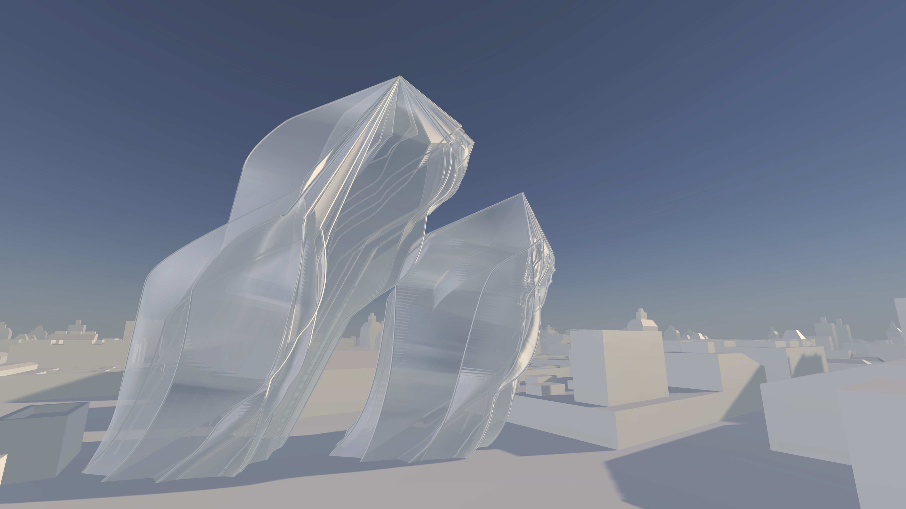
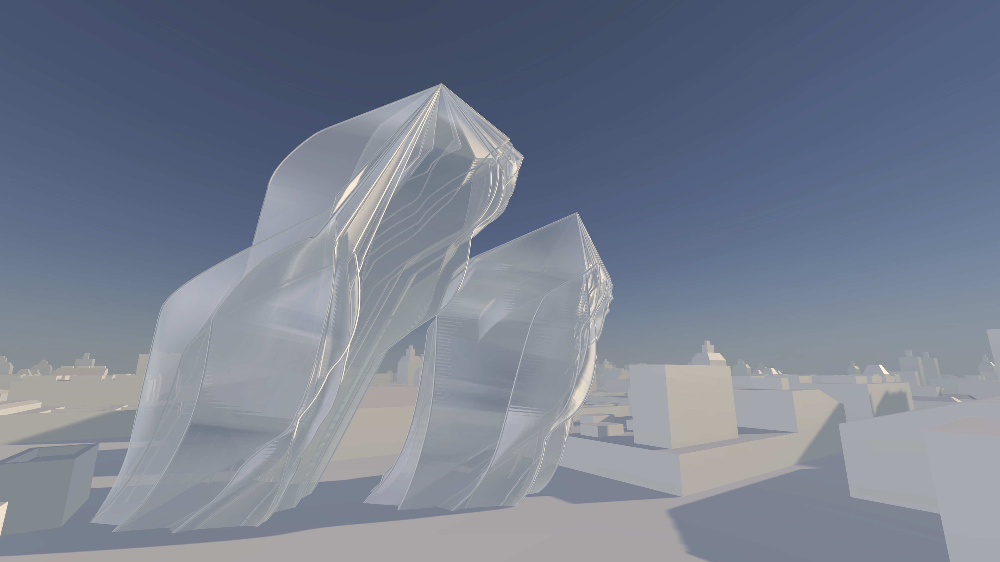
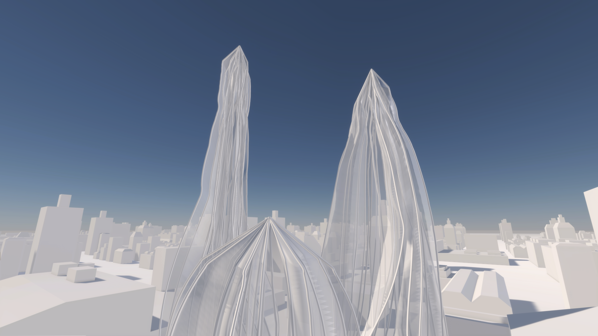
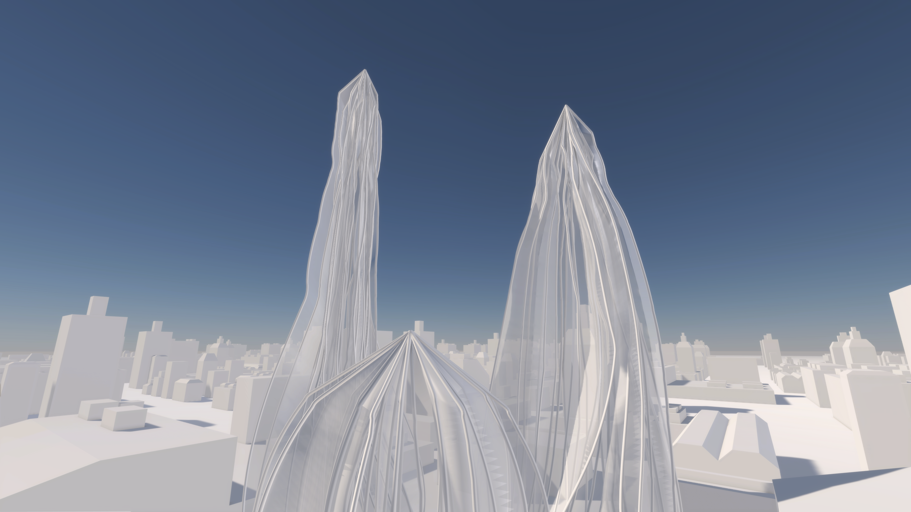

What is organic design?
Organic design uses thousands of "agents" (imagine an ant in a colony) that make decisions based on simple rules. The product of these thousands of agents moving around interacting with each other and the environment is an organism. Imagine the body as a huge number of cells, none of which know they're in a body, but perform their specific function to keep us alive.
We can use computers to simulate this process to create physical forms that we can then fabricate with tools like 3D printers or as instructions to build manually. Instead of needing to know exactly what we need upfront for a design for a chair or a house, the designer can define the environment, create agents with simple roles and then allow the design to unfold. It's a bit like handing over control of the process to the hive mind that then grows into the required form.
There are lots of applications for this method of design. In this project I've used these principles to create sculptures and cityscapes to imagine what the future of the built environment might be in a world with 3D printed buildings, communications built into building materials and sensors to capture a wide range of data about the environment.
With those I'm hoping to bring some of the feeling of nature into the built environment. Organic design uses self organising systems to finds optimal designs. It adapts to the environment it's is in the same way that plants and trees do. Because it mimics cellular growth it has a natural aesthetic as well. I think we're wired for nature because we can see the process of life within it like a tree shaped by the wind.
3 simple rules
The flocking of birds (called murmuration when starlings do it) is governed by 3 simple rules:
- Cohesion: fly towards the middle of the group
- Alignment: fly in the same direction as neighbors
- Separation: keep a small distance away from neighbors
 

 



Self-organising systems
I've been fascinated with swarms for some time. There's lots of names for this concept but a good one is emergence. Complex phenomena that emerge from many agents in a system interacting without central control. They exist at the level of neurons in the brain, honey bees moving to a new hive and right up to social systems made up of people making choices like market economies.
Cities are a great example. There are planning laws and schemes but our built environment and the way we move around the city is largely determined by individual choices. The shape of London and the character of its neighborhoods isn't determined by a master plan. It's grown over time through many iterations and the interaction of humans moving around, deciding where to live and shop and so on.
Find out more by watching this 15 minute talk
Responding to the environment
We can use organic design to respond to the conditions of the environment. In this work I've created buildings and sculptures that respond to light and the presence of other objects. For light each agent in the system checks to see if it's in the sunlight or not and reacts accordingly, moving into a position where it has a direct line of sight to the sun. They also scan the area for other buildings and either gravitate towards them or move away from them depending on the settings.
Responsive design allows us to go further than this by using sensor data to collection information about how people are using a space to respond. When people use a space and it starts to get crowded, agents can be programmed with rules that cause them to move away from clusters of people, expanding the space in a way that feels natural. Likewise they could also grow new rooms when demand requires it or old unused spaces could decay. With organic design these behaviours don't have to be specifically programmed in to predict every eventuality and outcome. The building-as-organism just needs a simple rule to know how each agent should respond to a local condition.
The how
This system was built using the Unity game engine. The Coding Train by Daniel Shiffman was a very helpful resource on flocking simulations and generative art in general. I highly recommend his book The Nature of Code.
Other people doing interesting things like this
You can see my code for this on github
Special thanks to Joe Patrick Shellard for extensive critique and feedback throughout the process